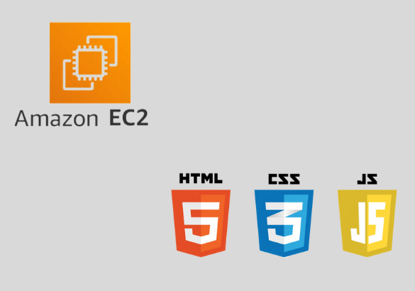

포트폴리오 웹사이트 만들기
AWS의 EC2 Ubuntu 서버를 빌려서 서버를 열었습니다. Ubuntu 에서 Nginx를 이용해서 웹서버를 열었습니다. AWS를 이용하면서 ip에 대한 기초적인 지식과 elastip ip, inbound, outbound 규칙, https설정 등을 배우며 네트워크, 포트 포워딩등을 알게 되었다. 포트폴리오를 만들 때 템플릿을 가지고 만들었는데 포트폴리오를 만들면서 HTML, CSS, JS에 더욱 익숙해 질 수 있었습니다.